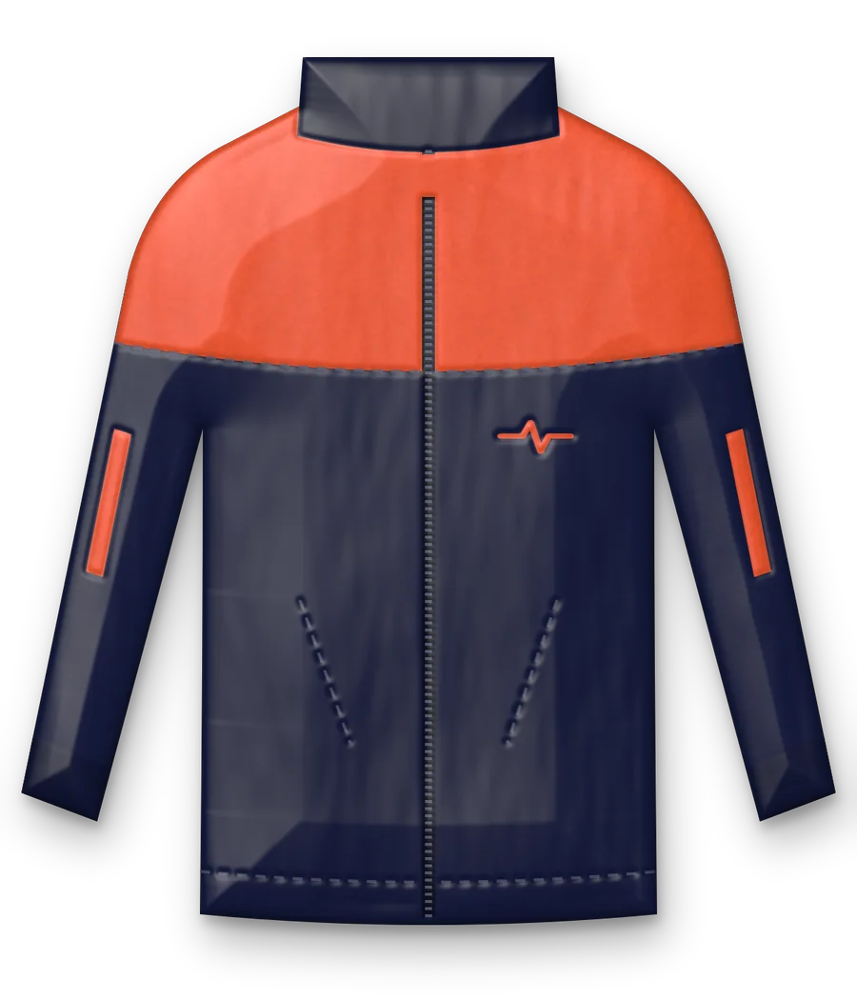
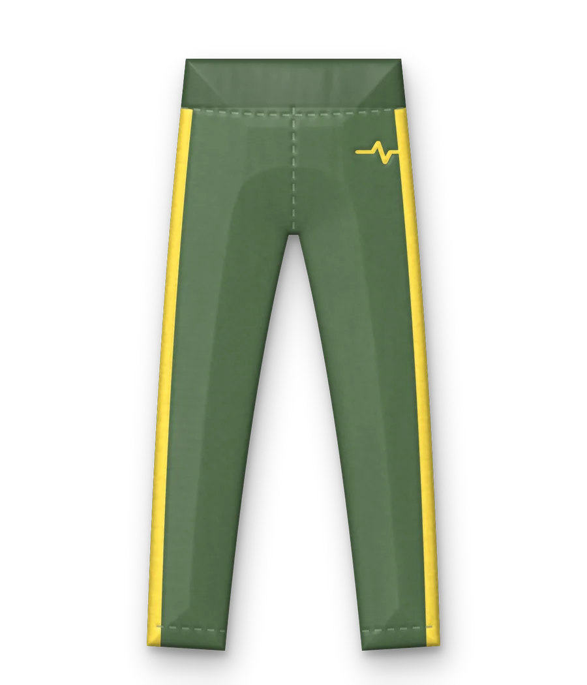
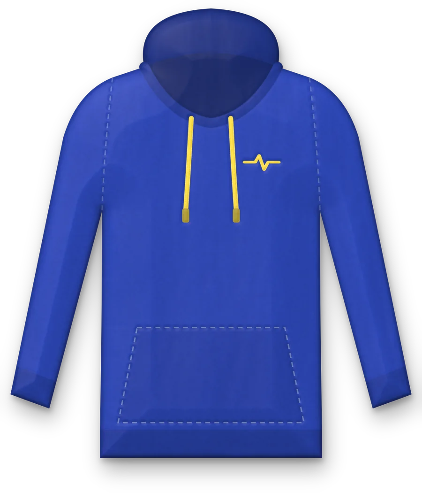
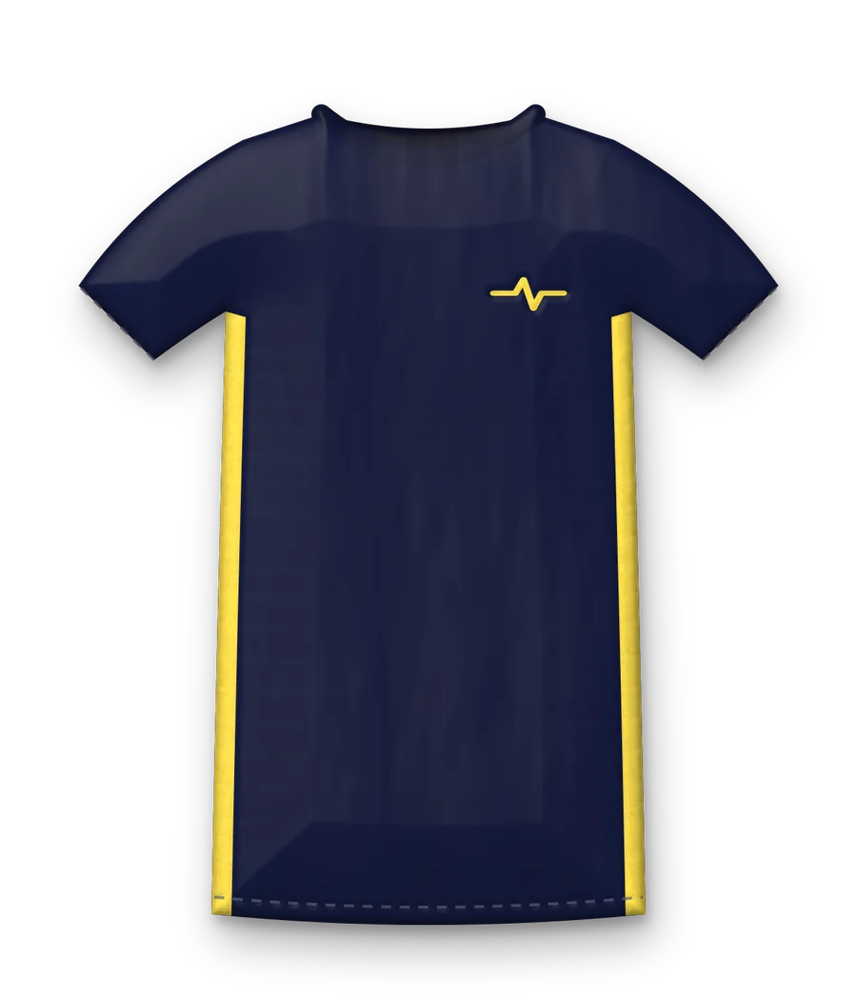

Volt
Running. Ligera, ventilada y reflectiva.
Presentación de marca y sitio web · 2026
Qué es PULSO, cómo se ve y por qué su tienda en línea está construida así.
Desliza, usa las flechas del teclado o los botones para avanzar.
PULSO diseña ropa para correr, entrenar y seguir con el día. Cada prenda se diseña en Ciudad de México y se prueba a 2,240 metros de altura, donde el aire es más delgado y el clima cambia en una misma mañana.
Todo sale de un lugar que cualquier deportista reconoce. Así la marca se ve deportiva sin caer en el negro con verde neón que usan casi todas.
El isotipo es la línea de un electrocardiograma: sube cuando te mueves. El nombre se dibuja con un trazo continuo inclinado 8°, como un corredor en plena zancada. Funciona pequeño en una etiqueta y enorme en una lona.
Archivos en assets/img/brand/: logo a color, en blanco e isotipo.

Un azul profundo como base, rojo y amarillo solo para lo que debe llamar la atención. Toca un color para copiar su código.
Big Shoulders Display para titulares: condensada, pesada, nacida de la señalética urbana. Instrument Sans para todo lo demás: clara en cualquier tamaño de pantalla.

Running. Ligera, ventilada y reflectiva.

Training. Compresión y estabilidad.

Lifestyle. Del entrenamiento al resto del día.
Segunda parte
Cada decisión responde a dos objetivos: vender y que la marca se recuerde.
La clienta o cliente típico corre o entrena antes del trabajo y compra en el trayecto, con una mano. Por eso todo se diseñó primero para pantalla chica: botones grandes, la compra siempre a un toque y nada que dependa de pasar el cursor.
La línea del latido cruza la portada y sus pulsaciones suben cuando mueves el cursor o haces scroll. Es el momento que la gente recuerda: comunica la marca sin leer una sola palabra.
En lugar de un menú de categorías, la portada muestra tres carriles: Volt, Base y Calle. Elegir deporte primero reduce las opciones de golpe y lleva a una tienda ya filtrada.
Deporte, talla, color y precio a la vez. La dirección de la página guarda los filtros, así se puede compartir una búsqueda.
En computadora se elige la talla sin salir de la tienda. En celular, la barra fija de compra está siempre a la mano.
Frente, espalda y detalle del tejido resuelven las dudas que causan devoluciones.
Muestra cuánto falta para llegar a $999. Invita a agregar una prenda más y sube el ticket promedio.
Datos, envío y pago, con validación en vivo y el total siempre visible.
Además de tarjeta, los métodos que más usa quien compra en línea en México.
La prenda vuela al carrito al agregarla, las tarjetas se reacomodan al filtrar y las páginas cambian con una transición de carriles. Si alguien tiene activada la opción de reducir movimiento en su teléfono, el sitio la respeta.

1Además se navega con teclado, tiene textos alternativos en las imágenes y contraste suficiente para leer bajo el sol.